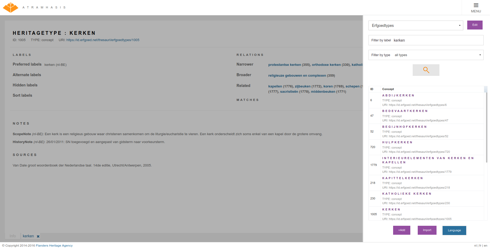

A new version (0.7.0) of Atramhasis has been released. Atramhasis is an open-source, web-based SKOS editor. You can use it to browse SKOS vocabularies, thesauri, authority files, word lists, … Atramhasis comes with an admin interface you can use to add the concepts and collections of your vocabularies. To make integrating vocabularies with your other IT systems easy, all data in Atramhasis is exposed through a read an write REST webservice.
This version does not contain a lot of features visible to end users. Most improvements are technical in nature, improving stability of the application. One new feature is the addition of a simple tree that makes printing a thesaurus feasible.
Warning
This releases does contain some backwards incompatible changes that require a careful upgrade and some manual intervention. The 0.7.x releases will also be the last to support Python 2. If you haven’t upgraded to Python 3 yet, we advise you to do now.
The backwards compatibility breaking change in this version has to do with how and when the skosprovider.registry.Registry is instantiated. While this used to be done when the application starts, it is now done when a request is created. The previous way of working created problems with SQLAlchemy providers in a webserver using mutiple threads. Please review the docs at https://atramhasis.readthedocs.io/en/latest/customisation.html#creating-conceptschemes to see how it works now. For more background, have a look at the pyramid_skosprovider docs at https://pyramid-skosprovider.readthedocs.io/en/0.9.0/install.html
As noted, Atramhasis 0.7.x will be the last version to support Python 2. Atramhasis and all related software libraries will stop supporting Python 2 or have already done so:
atramhasis will drop support for Python 2 with version 1.0.0
skosprovider will drop support for Python 2 with version 0.8.0
language-tags dropped support for Python 2 with version 1.0.0
pyramid_skosprovider will drop support for Python 2 with version 0.10.0
skosprovider_sqlalchemy will drop support for Python 2 with version 0.7.0
skosprovider_atramhasis dropped support for Python 2 with version 0.4.0
skosprovider_getty will drop support for Python 2 with version 0.6.0
skosprovider_rdf will drop support for Python 2 with version 0.9.0
skosprovider_heritagedata is currently unmaintained
We changed the implementation SKOS collections. The default assumption has always been that concepts in a collection were also narrower concepts of the collection’s superordinate concept, but the implementation for this was incomplete and contained bugs. This has been changed by adding a boolean attribute infer_concept_relations to collections. When set to true, concepts in a collection are considerd to be narrower concepts of that collections’s superordinate concept. When set to False, they are not considered as narrower concepts. This is especially important for a provider’s expand function and affects what is considered a narrower concept of a concept that uses thesaurus arrays or node labels.
We also put some more thought into SEO. HTML concept detail pages were expanded with some HTML metadata such as a canonical URL, a Twitter card and OpenGraph info. We also included a script that can generate an XML sitemap for you installation. This allows search engines to index your thesaurus site more efficiently.
A view of the Atramhasis admin interface
For those of you who are unsure about what Atramhasis looks like and does, we’ve added a section to the documentation that explains the purpose of the application and how the interface functions.
As always, lots of bugs were fixed, code was refactored and rewritten and documenation has been updated. See https://github.com/OnroerendErfgoed/atramhasis/releases/tag/0.7.0 for the full list of changes.
We invite everybody to try out the release. You can see a working example of Atramhasis at https://thesaurus.onroerenderfgoed.be, a customised version of Atramhasis containing the thesauri use by Flanders Heritage Agency. If you encounter problems, please let us know. Either through the forum or our Github tracker.